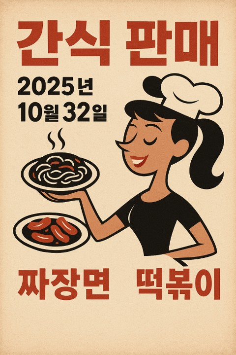

모듈 1. AI 판매 도우미
2 / 6
유진이는 선생님과 함께 간식 행사 홍보에 사용될 포스터를 생성형 AI로 제작했다. 생성한 홍보 포스터를 그대로 사용할지, 혹은 수정하거나 사용하지 않을지 선택하고, 그 이유를 고르시오.
포스터 제작에 사용된 프롬프트
학교 축제에서 열리는 간식 판매 부스를 알리는 포스터를 만들어줘.날짜는 2025년 10월 23일, 판매 품목은 핫도그와 음료야.
생성형 AI가 제작한 홍보 포스터

| 학생 | 판단 | 판단 사유 | |
|---|---|---|---|
| 지우 | 수용 | 디자인이 완성도 높고 눈에 잘 띄어서, 그대로 사용해도 충분할 것 같아. | |
| 지온 | 수용 | 인공지능이 생성한 포스터는 의도한 바를 정확하게 담고 있으므로 그대로 사용해도 돼. | |
| 수아 | 수정 | 주요 정보가 정확하지 않으므로, 수정을 요청해서 사용해야 해 | |
| 우진 | 수정 | 학생들이 더 관심을 가질 수 있도록 캐릭터 표정과 디자인 요소를 조금 수정하면 좋겠어. | |
| 윤재 | 거부 | 인공지능은 언제나 틀릴 가능성이 있으니, 홍보 포스터 창작을 위해서는 절대 사용하지 않겠어. |